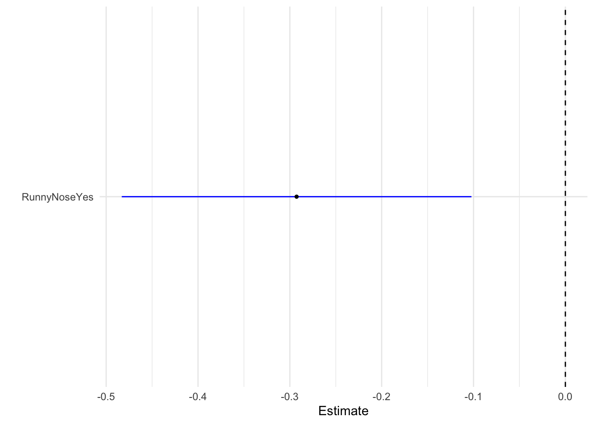
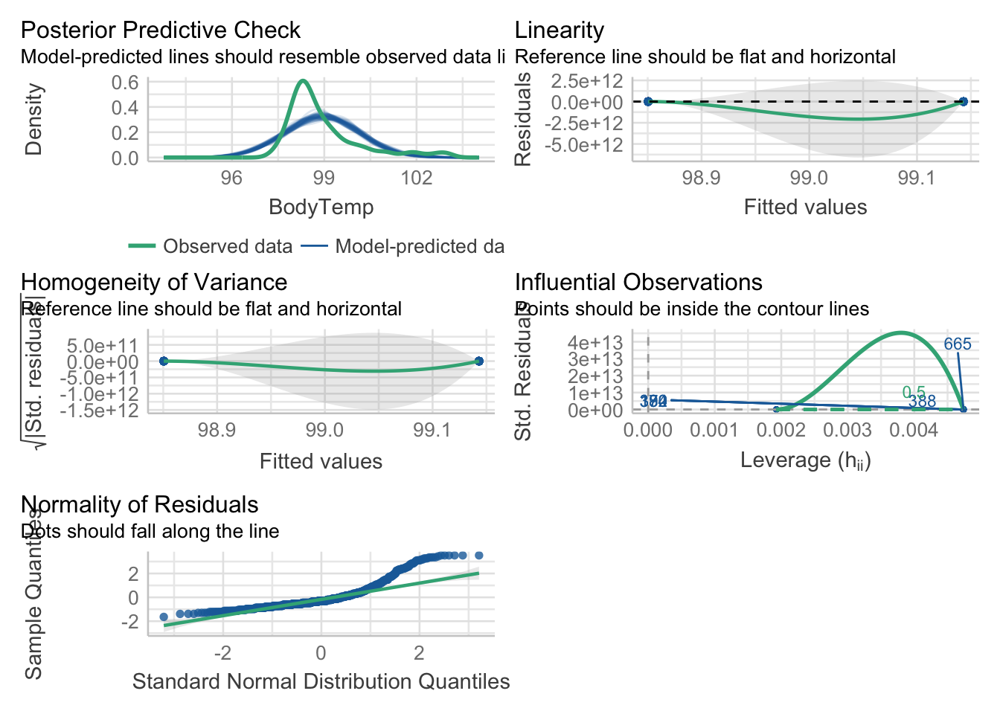
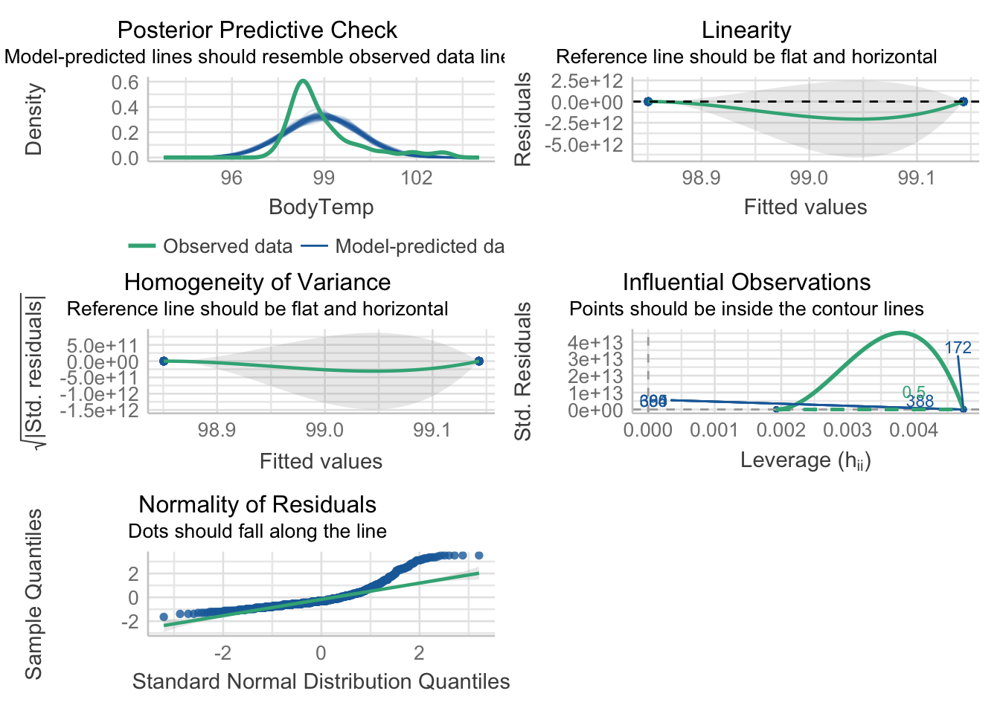
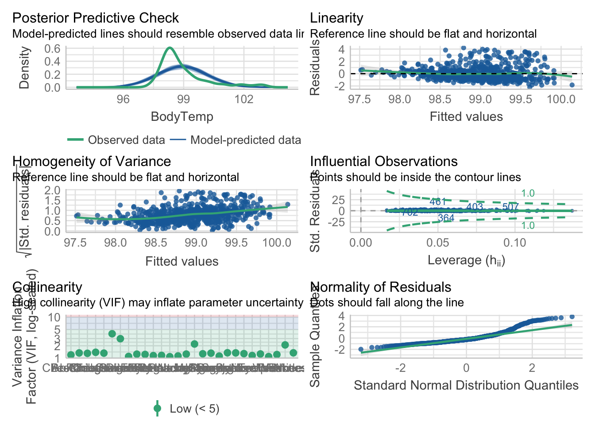
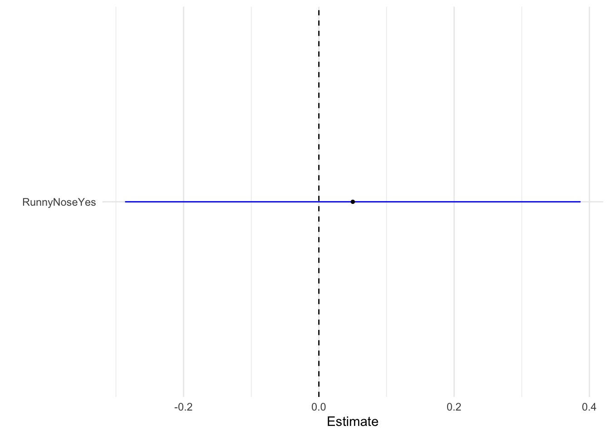
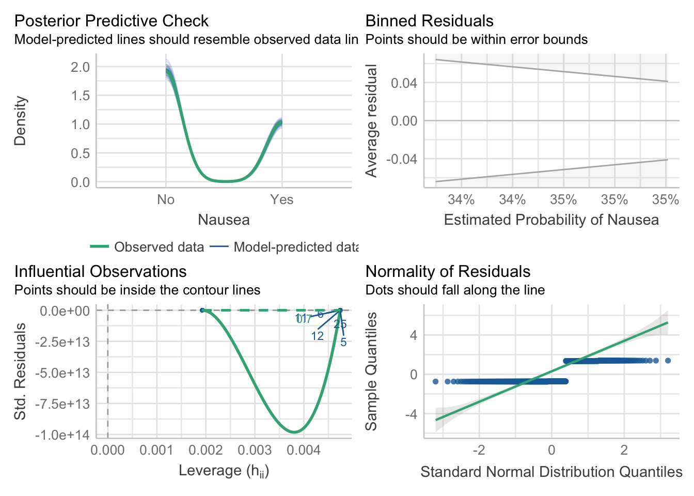
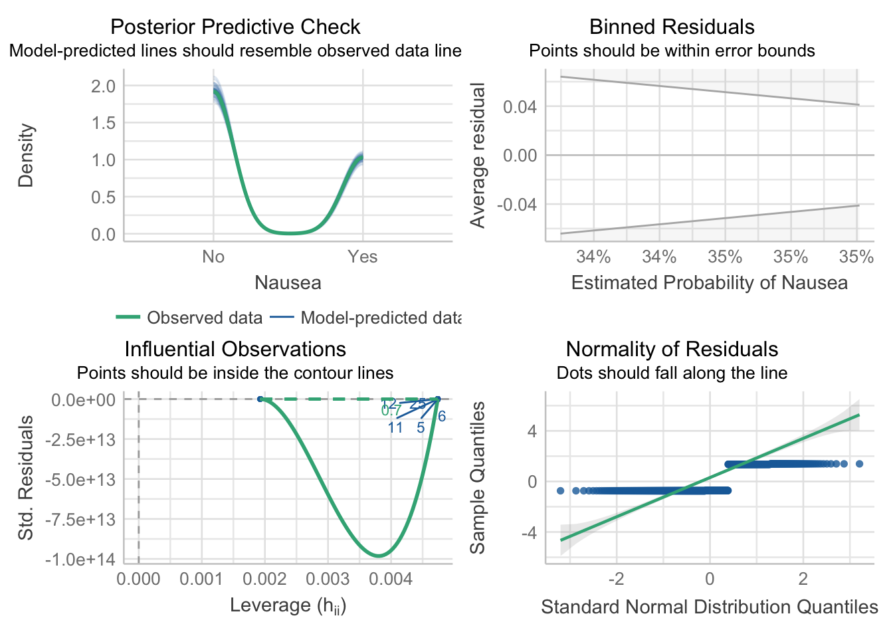
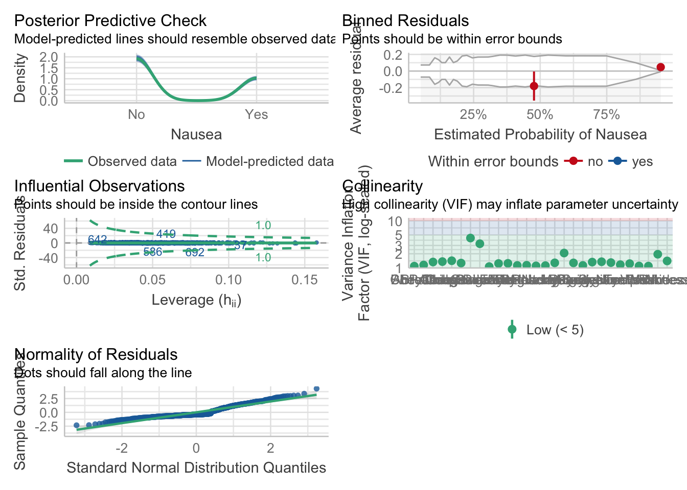
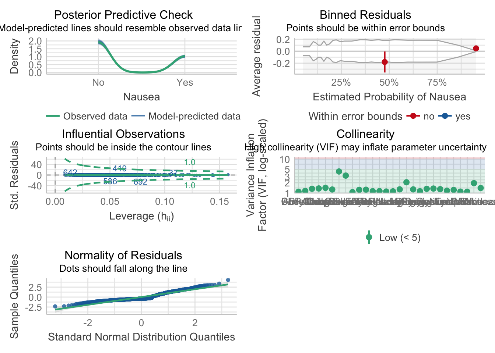

Flu Anlaysis - Model Fitting
Load Libraries
Load the data
#path to clean data
data = readRDS(here("fluanalysis", "data", "cleandata.rds")) #load RDS fileFit a linear model to the continuous outcome (Body temperature) using only the main predictor of interest.
Our main predictor is Runny Nose
#specify linear model to regression model
model1 = linear_reg() %>%
set_engine("lm")
#fit the linear model to our main predictor
model_fit_1 = model1 %>%
fit(BodyTemp ~ RunnyNose, data=data)
model_fit_1parsnip model object
Call:
stats::lm(formula = BodyTemp ~ RunnyNose, data = data)
Coefficients:
(Intercept) RunnyNoseYes
99.1431 -0.2926 Table of results #1
tidy(model_fit_1) #table of model summary# A tibble: 2 × 5
term estimate std.error statistic p.value
<chr> <dbl> <dbl> <dbl> <dbl>
1 (Intercept) 99.1 0.0819 1210. 0
2 RunnyNoseYes -0.293 0.0971 -3.01 0.00268#2
#show results
glance(model_fit_1)# A tibble: 1 × 12
r.squ…¹ adj.r…² sigma stati…³ p.value df logLik AIC BIC devia…⁴ df.re…⁵
<dbl> <dbl> <dbl> <dbl> <dbl> <dbl> <dbl> <dbl> <dbl> <dbl> <int>
1 0.0123 0.0110 1.19 9.08 0.00268 1 -1162. 2329. 2343. 1031. 728
# … with 1 more variable: nobs <int>, and abbreviated variable names
# ¹r.squared, ²adj.r.squared, ³statistic, ⁴deviance, ⁵df.residualPlot regression model as boxwhisker plot
tidy(model_fit_1) %>%
dwplot(dot_args = list(size = 1, color = "black"),vline = geom_vline(xintercept = 0, colour = "black", linetype = 2),
whisker_args = list(color = "blue")) + xlab("Estimate") + theme_minimal()
Regression estimate for runny nose as a predictor is nearly -0.3
plot performance
mp1 = check_model(model_fit_1$fit)
#model_1_performanceAdjust the check_model output figure titles. This allows all the text on the axis to be legible.
#mp1
p1 = plot(mp1)
p1[[1]] = p1[[1]] + theme(plot.title = element_text(hjust = 0.5),plot.subtitle = element_text(hjust = 0.5))
p1[[2]] = p1[[2]] + theme(plot.title = element_text(hjust = 0.5),plot.subtitle = element_text(hjust = 0.5))
p1[[3]] = p1[[3]] + theme(plot.title = element_text(hjust = 0.5),plot.subtitle = element_text(hjust = 0.5))
p1[[4]] = p1[[4]] + theme(plot.title = element_text(hjust = 0.5),plot.subtitle = element_text(hjust = 0.5))
p1[[5]] = p1[[5]] + theme(plot.title = element_text(hjust = 0.5),plot.subtitle = element_text(hjust = 0.5))
p1 
Fits another linear model to the continuous outcome using all (important) predictors of interest.
#specify linear model to regression model
model2 = linear_reg() %>%
set_engine("lm")
#fit the linear model to all predictors
model_fit_2 = model2 %>%
fit(BodyTemp ~., data=data)
model_fit_2 #table of model summaryparsnip model object
Call:
stats::lm(formula = BodyTemp ~ ., data = data)
Coefficients:
(Intercept) SwollenLymphNodesYes ChestCongestionYes
97.925243 -0.165302 0.087326
ChillsSweatsYes NasalCongestionYes CoughYNYes
0.201266 -0.215771 0.313893
SneezeYes FatigueYes SubjectiveFeverYes
-0.361924 0.264762 0.436837
HeadacheYes WeaknessMild WeaknessModerate
0.011453 0.018229 0.098944
WeaknessSevere WeaknessYNYes CoughIntensityMild
0.373435 NA 0.084881
CoughIntensityModerate CoughIntensitySevere CoughYN2Yes
-0.061384 -0.037272 NA
MyalgiaMild MyalgiaModerate MyalgiaSevere
0.164242 -0.024064 -0.129263
MyalgiaYNYes RunnyNoseYes AbPainYes
NA -0.080485 0.031574
ChestPainYes DiarrheaYes EyePnYes
0.105071 -0.156806 0.131544
InsomniaYes ItchyEyeYes NauseaYes
-0.006824 -0.008016 -0.034066
EarPnYes HearingYes PharyngitisYes
0.093790 0.232203 0.317581
BreathlessYes ToothPnYes VisionYes
0.090526 -0.022876 -0.274625
VomitYes WheezeYes
0.165272 -0.046665 Table of model summary
tidy(model_fit_2)#table of model summary# A tibble: 38 × 5
term estimate std.error statistic p.value
<chr> <dbl> <dbl> <dbl> <dbl>
1 (Intercept) 97.9 0.304 322. 0
2 SwollenLymphNodesYes -0.165 0.0920 -1.80 0.0727
3 ChestCongestionYes 0.0873 0.0975 0.895 0.371
4 ChillsSweatsYes 0.201 0.127 1.58 0.114
5 NasalCongestionYes -0.216 0.114 -1.90 0.0584
6 CoughYNYes 0.314 0.241 1.30 0.193
7 SneezeYes -0.362 0.0983 -3.68 0.000249
8 FatigueYes 0.265 0.161 1.65 0.0996
9 SubjectiveFeverYes 0.437 0.103 4.22 0.0000271
10 HeadacheYes 0.0115 0.125 0.0913 0.927
# … with 28 more rowsPlot regression model as boxwhisker plot
tidy(model_fit_2) %>%
dwplot(dot_args = list(size = 1, color = "black"),vline = geom_vline(xintercept = 0, colour = "black", linetype = 2),
whisker_args = list(color = "blue")) + xlab("Estimate") + theme_minimal()
Plot performance
mp2 = check_model(model_fit_2$fit)
#model_1_performanceAdjust the check_model output figure titles. This allows all the text on the axis to be legible.
p2 = plot(mp2)
p2[[1]] = p2[[1]] + theme(plot.title = element_text(hjust = 0.5),plot.subtitle = element_text(hjust = 0.5))
p2[[2]] = p2[[2]] + theme(plot.title = element_text(hjust = 0.5),plot.subtitle = element_text(hjust = 0.5))
p2[[3]] = p2[[3]] + theme(plot.title = element_text(hjust = 0.5),plot.subtitle = element_text(hjust = 0.5))
p2[[4]] = p2[[4]] + theme(plot.title = element_text(hjust = 0.5),plot.subtitle = element_text(hjust = 0.5))
p2[[5]] = p2[[5]] + theme(plot.title = element_text(hjust = 0.5),plot.subtitle = element_text(hjust = 0.5))
p2[[6]] = p2[[6]] + theme(plot.title = element_text(hjust = 0.5),plot.subtitle = element_text(hjust = 0.5))
p2
Compares the model results for the model with just the main predictor and all predictors.
compare_performance(model_fit_1,model_fit_2)# Comparison of Model Performance Indices
Name | Model | AIC (weights) | AICc (weights) | BIC (weights) | R2 | R2 (adj.) | RMSE | Sigma
----------------------------------------------------------------------------------------------------------
model_fit_1 | _lm | 2329.3 (<.001) | 2329.4 (<.001) | 2343.1 (>.999) | 0.012 | 0.011 | 1.188 | 1.190
model_fit_2 | _lm | 2303.8 (>.999) | 2307.7 (>.999) | 2469.2 (<.001) | 0.129 | 0.086 | 1.116 | 1.144Fits a logistic model to the categorical outcome (Nausea) using only the main predictor of interest.
#specify linear model logistic_reg() which generalized linear model for binary outcomes
model3 = logistic_reg() %>%
set_engine("glm") #fit model generalized linear model
#fit the linear model to our main predictor
model_fit_3 = model3 %>%
fit(Nausea ~ RunnyNose, data=data)
model_fit_3 #table of model summaryparsnip model object
Call: stats::glm(formula = Nausea ~ RunnyNose, family = stats::binomial,
data = data)
Coefficients:
(Intercept) RunnyNoseYes
-0.65781 0.05018
Degrees of Freedom: 729 Total (i.e. Null); 728 Residual
Null Deviance: 944.7
Residual Deviance: 944.6 AIC: 948.6Table of results
#1
tidy(model_fit_3) #table of model summary# A tibble: 2 × 5
term estimate std.error statistic p.value
<chr> <dbl> <dbl> <dbl> <dbl>
1 (Intercept) -0.658 0.145 -4.53 0.00000589
2 RunnyNoseYes 0.0502 0.172 0.292 0.770 #2
#show results
glance(model_fit_3)# A tibble: 1 × 8
null.deviance df.null logLik AIC BIC deviance df.residual nobs
<dbl> <int> <dbl> <dbl> <dbl> <dbl> <int> <int>
1 945. 729 -472. 949. 958. 945. 728 730Plot model as box whisker plot
tidy(model_fit_3) %>%
dwplot(dot_args = list(size = 1, color = "black"),vline = geom_vline(xintercept = 0, colour = "black", linetype = 2),
whisker_args = list(color = "blue")) + xlab("Estimate") + theme_minimal()
Regression estimate for runny nose as a predictor is nearly 0.05
plot performance
mp3 = check_model(model_fit_3$fit)
#model_1_performanceAdjust the check_model output figure titles. This allows all the text on the axis to be legible.
#mp1
p3 = plot(mp3)
p3[[1]] = p3[[1]] + theme(plot.title = element_text(hjust = 0.5),plot.subtitle = element_text(hjust = 0.5))
p3[[2]] = p3[[2]] + theme(plot.title = element_text(hjust = 0.5),plot.subtitle = element_text(hjust = 0.5))
p3[[3]] = p3[[3]] + theme(plot.title = element_text(hjust = 0.5),plot.subtitle = element_text(hjust = 0.5))
p3[[4]] = p3[[4]] + theme(plot.title = element_text(hjust = 0.5),plot.subtitle = element_text(hjust = 0.5))
p3 
Fits another logistic model to the categorical outcome using all (important) predictors of interest.
#specify linear model logistic_reg() which generalized linear model for binary outcomes
model4 = logistic_reg() %>%
set_engine("glm") #fit model generalized linear model
#fit the linear model to our main predictor
model_fit_4 = model4 %>%
fit(Nausea ~., data=data)
model_fit_4parsnip model object
Call: stats::glm(formula = Nausea ~ ., family = stats::binomial, data = data)
Coefficients:
(Intercept) SwollenLymphNodesYes ChestCongestionYes
0.222870 -0.251083 0.275554
ChillsSweatsYes NasalCongestionYes CoughYNYes
0.274097 0.425817 -0.140423
SneezeYes FatigueYes SubjectiveFeverYes
0.176724 0.229062 0.277741
HeadacheYes WeaknessMild WeaknessModerate
0.331259 -0.121606 0.310849
WeaknessSevere WeaknessYNYes CoughIntensityMild
0.823187 NA -0.220794
CoughIntensityModerate CoughIntensitySevere CoughYN2Yes
-0.362678 -0.950544 NA
MyalgiaMild MyalgiaModerate MyalgiaSevere
-0.004146 0.204743 0.120758
MyalgiaYNYes RunnyNoseYes AbPainYes
NA 0.045324 0.939304
ChestPainYes DiarrheaYes EyePnYes
0.070777 1.063934 -0.341991
InsomniaYes ItchyEyeYes EarPnYes
0.084175 -0.063364 -0.181719
HearingYes PharyngitisYes BreathlessYes
0.323052 0.275364 0.526801
ToothPnYes VisionYes VomitYes
0.480649 0.125498 2.458466
WheezeYes BodyTemp
-0.304435 -0.031246
Degrees of Freedom: 729 Total (i.e. Null); 695 Residual
Null Deviance: 944.7
Residual Deviance: 751.5 AIC: 821.5Table of model summary
tidy(model_fit_4) #table of model summary# A tibble: 38 × 5
term estimate std.error statistic p.value
<chr> <dbl> <dbl> <dbl> <dbl>
1 (Intercept) 0.223 7.83 0.0285 0.977
2 SwollenLymphNodesYes -0.251 0.196 -1.28 0.200
3 ChestCongestionYes 0.276 0.213 1.30 0.195
4 ChillsSweatsYes 0.274 0.288 0.952 0.341
5 NasalCongestionYes 0.426 0.255 1.67 0.0944
6 CoughYNYes -0.140 0.519 -0.271 0.787
7 SneezeYes 0.177 0.210 0.840 0.401
8 FatigueYes 0.229 0.372 0.616 0.538
9 SubjectiveFeverYes 0.278 0.225 1.23 0.218
10 HeadacheYes 0.331 0.285 1.16 0.245
# … with 28 more rowsPlot model as box whisker plot
tidy(model_fit_4) %>%
dwplot(dot_args = list(size = 1, color = "black"),vline = geom_vline(xintercept = 0, colour = "black", linetype = 2),
whisker_args = list(color = "blue")) + xlab("Estimate") + theme_minimal()
**Vomiting has the highest estimate at 2.4
Plot performance
mp4 = check_model(model_fit_4$fit)Adjust the check_model output figure titles. This allows all the text on the axis to be legible.
p4 = plot(mp4)
p4[[1]] = p4[[1]] + theme(plot.title = element_text(hjust = 0.5),plot.subtitle = element_text(hjust = 0.5))
p4[[2]] = p4[[2]] + theme(plot.title = element_text(hjust = 0.5),plot.subtitle = element_text(hjust = 0.5))
p4[[3]] = p4[[3]] + theme(plot.title = element_text(hjust = 0.5),plot.subtitle = element_text(hjust = 0.5))
p4[[4]] = p4[[4]] + theme(plot.title = element_text(hjust = 0.5),plot.subtitle = element_text(hjust = 0.5))
p4[[5]] = p4[[5]] + theme(plot.title = element_text(hjust = 0.5),plot.subtitle = element_text(hjust = 0.5))
p4
Compares the model results for the categorical model with just the main predictor and all predictors.
compare_performance(model_fit_3,model_fit_4)# Comparison of Model Performance Indices
Name | Model | AIC (weights) | AICc (weights) | BIC (weights) | Tjur's R2 | RMSE | Sigma | Log_loss | Score_log | Score_spherical | PCP
-------------------------------------------------------------------------------------------------------------------------------------------------
model_fit_3 | _glm | 948.6 (<.001) | 948.6 (<.001) | 957.8 (>.999) | 1.169e-04 | 0.477 | 1.139 | 0.647 | -107.871 | 0.012 | 0.545
model_fit_4 | _glm | 821.5 (>.999) | 825.1 (>.999) | 982.2 (<.001) | 0.247 | 0.414 | 1.040 | 0.515 | -Inf | 0.002 | 0.658